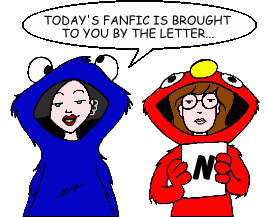
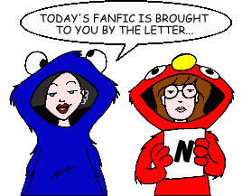

Fan Fiction
"N" by Title

Fan Fiction
"N" by Title

|
Authors: If you no longer wish for any of your stories to be posted, please send e-mail to fanfic@lawndale.net and I will remove them at once. |
| N'giynah mi'ha'Lev By The Eighth Guardian Category: Miscellaneous The Morgendorffers reclaim the religion they had been too busy to keep up with, only to spark off a mix of support and bigotry as Lawndale learns that the Morgendorffers are Jewish. Possibly the first story in a series. |
| Natural Charms (*) By The Angst Guy Category: Miscellaneous When Upchuck takes up modeling photography, things unexpectedly develop in a negative way. An entry in one of the PPMB's "Iron Chef" contests. |
| Neon Night By Wyvern337 Category: Miscellaneous One night at Tom's, Daria ends up doing something she never has before. Not necessarily what it sounds like! |
| Nestor By Shane Greentree Category: Crossovers & Parodies It is a little known (or entirely fabricated) fact that, shortly before his death, James Joyce began adapting his great novel "Ulysses" into the "Daria" universe. Presently only this fragment has been found. |
| A New Arrival By Bacner Category: Miscellaneous A friend of Helen's sends her daughter to Helen to provide a good example. Unfortunately, since Helen already has a bonding Jake and Daria, and a flatly unsympathetic and unhelpful Quinn to deal with, the situation may turn out differently than what Helen intended. |
| The New Chick By Chick309@aol.com Category: School Situations A new girl arrives at Lawndale High. |
| New Direction By Jill Palmer Category: Miscellaneous Sandi kicks Quinn out of the Fashion Club. Daria notices something is wrong and offers to teach Quinn the ways of the nonconformist. See what happens to Daria, Quinn, Jane, and the FC when she accepts... |
| New Eyes [Artwork] By Nemo Blank Category: Romance Daria finds her spirits soaring when she and Trent finally hook up, only to see them crash back to Earth when he hits the road with Mystik Spiral in an attempt to finally hit the big time (and make himself worthy of her). As Trent tries to make a name for himself, Daria finds that her summer job could provide her with much more than just money for college. |
| The New Girl By LeadFeathered Category: Romance When a new girl transfers to Lawndale, she manages to replace a member of Mystik Spiral, making Daria jealous in the process. Filled with surprising hookups and heartbreaks. |
| The New Girl (*) By NightGoblyn Category: Alternate History A teenage girl and her family move to a new town to get a fresh start on life, and she meets a new friend. |
| New Masters of the Universe By Cyke Category: Series & Multi-Part Stories (Crossovers & Parodies) In this crossover series, the never-ending battle between He-Man and Skeletor comes to Lawndale, home of He-Man's descendent. |
| New Neighbor By Asha Williams Category: Miscellaneous A new family moves next door to the Morgendorffers, and Daria discovers that one of the girls has an attitude that is very, very familiar... |
| A New Student in Lawndale [Artwork] By Jane Category: Romance One of Trent's idols comes to live in Lawndale, and he goes out with her in an attempt to make Daria jealous. |
| The New Teacher Series By Ben Breeck Category: Series & Multi-Part Stories (Miscellaneous) Lawndale High gets a new teacher, who both challenges and intrigues Daria and her friends. Set after "Is It Fall Yet?", in place of the official Seaon 5. |
| The New View By Richard Lobinske Category: Past & Future Daria and Quinn find work as lifeguards at the Lawndale Children's Pool and discover that their coworker is Ted DeWitt-Clinton, who seems to have finally noticed that girls are different. Written in response to Brother Grimace's "Morgendorffer Temptresses" challenge and set immediately after "Is It College Yet?". |
| Next in Line (*) By The Angst Guy Category: Past & Future Thirty years from now, three old friends reunite to remember the past, just moments before the future arrives to overtake them. |
| The Next Step [Artwork] By Mike Yamiolkoski Category: Miscellaneous Picks up immediately after "Is It College Yet?" left off. Jane wonders how she's going to pay for college, Quinn wonders if she and the ex-Fashion Club can remain friends without resorting to their old ways, and Daria wonders what's up with Tom, who's been acting strange ever since they broke up. |
| Next Time, This Time By Robert Nowall Category: Miscellaneous Who is this person having breakfast with the Morgendorffers? |
| Night Holds the Key By Anachronism Girl Category: Romance Daria and Trent have a sort-of late night encounter. A prequel (of sorts) to Roger E. Moore's "April is the Cruelest Month." |
| A Night of Bells (But No Whistles) By Doggieboy Category: Crossovers & Parodies A temporary clothing change gets Daria the most unexpected kind of attention. A crossover with the Cartoon Network Adult Swim series "Robot Chicken." |
| Night of the Living Butt-Head By Bobby Birks Category: Crossovers & Parodies Beavis and Butt-Head come alive as zombies, and as a result, everyone starts killing each other. A "Beavis and Butt-Head" crossover, with a cameo FBI agents Mulder and Scully (of "The X-Files" fame). |
| Night of the Living Doll By Robert Nowall Category: Sci-Fi, Fantasy & Horror The horrible accident ten-year-old Tiffany suffered was only part of the story... |
| Night of the Living Furniture By Smileyfax Category: Sci-Fi, Fantasy & Horror Jane discovers Tom in the midst of doing unspeakable things to the Morgendorffers, and must flee for her life. Followed by "Snow Problem." |
| Night of the Living Lawndale By Amber "Sunny" Howard Category: Miscellaneous As darkness falls over Lawndale, how do our favorite characters deal with life in a town so psychologically screwed? |
| A Night of Zen By Brandon League Category: Miscellaneous Mystik Spiral learns of a Battle of the Bands at the Zen, where the prize is $10,000 dollars and a trophy presented by one of Trent's long time idols: Bruce Dickenson from Iron Maiden. How can they refuse? |
| A Night to Remember to Forget By Firah Category: Miscellaneous Stacy goes on a date with Upchuck, but is totally unprepared for what awaits her. |
| A Night You Should Remember By Alexandria Category: Romance Daria spends the night at Jane's and Trent comes home drunk. Misunderstandings ensue. |
| Nightmare By Erin Mills Category: Miscellaneous A ficlet that explores how our two favorite cynical outcasts might react to the 9/11 terrorist attacks. |
| Nine Point Oh (*) By The Angst Guy Category: Miscellaneous Just before noon, January 1, 2005, west of Petchkasem Road down to Bang Niang Beach, resort city of Khao Lak, Phang-Nga province, Kingdom of Thailand: The Griffin family's New Year. Followed by "When the Torrent of That Time Comes Pouring Back." |
| Nine-Eleven and Counting (*) By The Angst Guy Category: Miscellaneous The lives of Daria and Quinn Morgendorffer and Jane Lane are caught up in the events of September 11, 2001, when Quinn flies to Boston to visit Daria one weekend--then tries to fly home on that terrible Tuesday morning. |
| The Ninth Circle of Helen By Brother Grimace Category: Past & Future A self-insert fic based on a PPMB "Iron Chef" called "The Celeb Interview" that was tied in with the release of "Daria" on DVD. The author interviews Helen on life, love and muffins in the years after the show ended. |
| No More Amour! [Artwork] By Matt Category: Miscellaneous Lawndale is experiencing some sort of "season of amour." Everyone, and I mean EVERYONE, seems to be madly in love... all except Our Heroine. What's happening? And how long can Daria cope with the madness? |
| No One Lives Forever (*) By The Angst Guy Category: Past & Future It's a typical day in Los Angeles for Brittany Taylor: warm sun, busy streets, job hunting, and sudden death. |
| No One Loves a Fashion Diva By Ronin Category: Miscellaneous Things keep going worse and worse for Sandi, until... |
| North and South By The Ranting Klown Category: Romance Following being dumped by Monique and Tom, respectively, Trent and Daria find solace in each other. |
| North Star By Wouter Jaegers Category: Miscellaneous An expedition to the Arctic coast to study whale populations turns into both an adventure and a nightmare for Daria and her friends. |
| North to Alaska, South to Lawndale By Robert Nowall Category: Crossovers & Parodies Trent learns a lesson in the latest Great Alaskan Gold Rush. Based (loosely) on the song "Saginaw, Michigan" by Lefty Frizzell. |
| Not Quite Beyond the Goblin City By Professor Moriarity Category: Crossovers & Parodies In this parody of the film "Labyrinth," Daria wishes that Jareth, the Goblin King, would take Quinn away. But what happens when he does, and Daria doesn't want her back? And does Jareth really deserve having Quinn inflicted upon him? |
| Not So Parallel Universe [Artwork] By Asha Williams Category: Miscellaneous The citizens of Lawndale discover strange things happening around them... namely, a couple of spies named Glenn and Susie. Who are they, and what do they want? And what is this mysterious new show called "Daria," on a never-before-seen cable channel called MTV? |
| Not So Slow By Roland "Jim" Lowery Category: Sci-Fi, Fantasy & Horror I am not slow I am not slow I am not slow I am not slow I am not slow I am not slow I am not slow I am not slow I am not slow I am not slow I am not slow I am not slow I am not slow I am not slow I am not slow I am not slow I am not slow I am not slow |
| Not Your Average Jane By Yui Daoren Category: Miscellaneous Jane tries to put her life back together after a few blows to her confidence in her identity. Takes place after "Is It Fall Yet?" but before "Fizz Ed." |
| A Note on the Library Table By Voice Of My Category: Miscellaneous An anonymous note found at a library table in Lawndale High. Who is the writer?? |
| Notes By Beth Category: School Situations Daria and Jane's notes from english. |
| Notes From Lawndale By Gregor Samsa Category: Miscellaneous "Is It Fall Yet?" as written by Fyodor Dostoevsky. |
| Nothing Happens for a Reason (*) By The Angst Guy Category: Miscellaneous College freshmen Daria Morgendorffer and Tom Sloane are together again, joyously happy and blissfully in love--until the day she finds him in bed with a small zoo and Tiffany Blum-Deckler. You'll weep, you'll cry, you'll kiss ten minutes of your life goodbye when you read this unofficial sequel to Mahna Mahna's Daria/Tom shipper, "Everything Happens for a Reason." |
| The Nothingness of Being (*) By The Angst Guy Category: Miscellaneous Joey's evening after being rejected by Quinn in "One J at a Time." What conclusions does he come to after being left alone with his tortured thoughts? |
| Nowhere Man By E.A. Smith Category: Miscellaneous Driving home from a gig, Trent faces his future. Inspired by the song "Nowhere Man" by the Beatles. |
| Nuthouse [Artwork] (*) By The Angst Guy Category: Sci-Fi, Fantasy & Horror Dinnertime visitors at the Morgendorffers' home prove that Jake was right about one thing after all. |